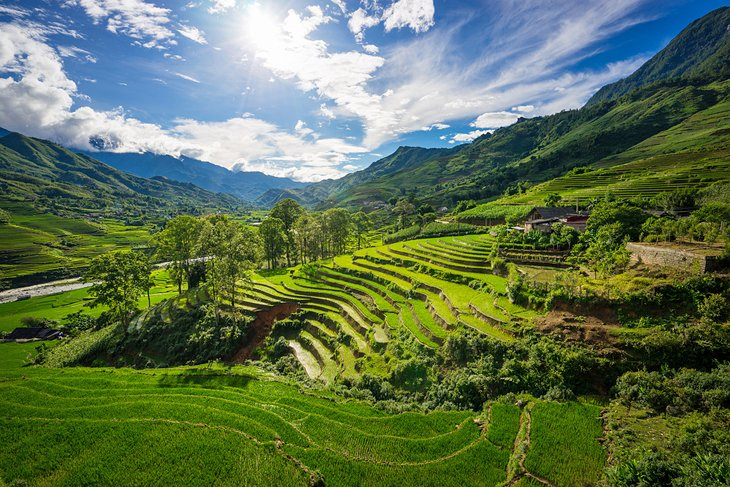
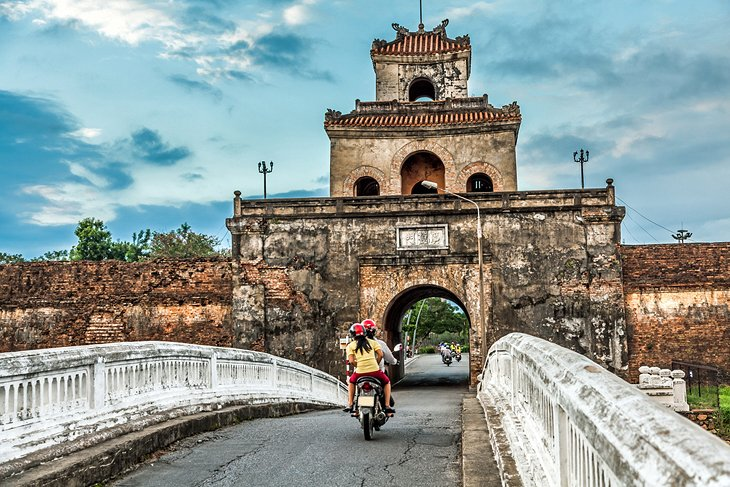
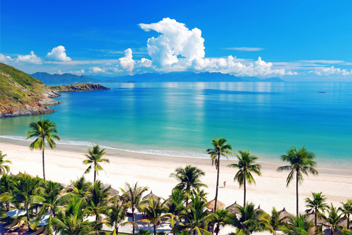
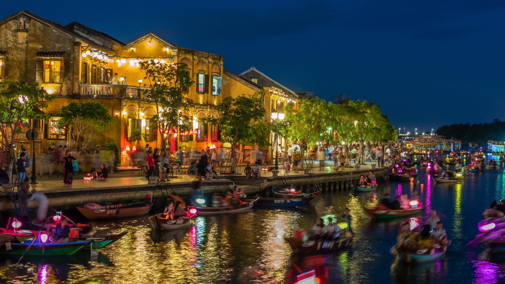

1. Halong Bay

Halong bay is one of the world's most beautiful sea view and also a UNESCO World Heritage Site. There are plenty of caves we can
explore in this beautiful bay including Hang Sung Sot, which has 3 mammoth caverns and Hang Dao Go, which has a lot of stalagamites
and stalactites. But what mostly people do in the bay is to cruise, exploring the beautiful scenery as you pass by. When you visit
vietnam, you need to visit this place, i promise you that you wont regret it. Do not leave Vietnam if you haven't gone to this place.
2. Sapa Countryside

This place is where we can find peace with that beautiful surroundings, that is nature. It is the a rice field countryside that surrounding Sapa.
As we can see, the peaks bordering the Sapa is called the Hoang Lien Mountains, which is also known in french colonial era as the Tonkinese Alps.
This scenery is a place where diverse mix of country's ethnic minorities stay, this includes Hmong, Giay, and Red Dzao. This is considered as the
top trekking destination in Vietnam, hiking between the tiny villages and experience the staggering mountain views. You can really enjoy going
here.
3. Hue

If you are a fan of places with Historic background, this place is for you. Hue is one of the most historic towns in Vitenam.
Hue is surrounded with relics from the reign of the 19th century Nguyen Emperors with the beautiful, Perfume River. When you go to this place,
it is good to check the details of this place, just like the gorgeous Ngo Mon Gate, The Thai Hoa Palace with its finely interior detail,
The Dien Tho Residence where the Queen Mothers live, and the Halls of Mandarins which has preserved ceiling murals. It is better when you take a riverboat cruise on the Perfume River.
1 trip can take you places, just like the Royal tombs. If you only have a limited time, the best tomb to visit is the Tomb of Tu Doc and the Pagoda
in Thei Mu Pagoda.
4. Nha Trang

For all of you beach lovers, this is the nicest beach to go to. Nha Trang is 6 kilometers long and a well maintained beach. It is just along the shoreline of Nha Trang
City. Foreign tourist goes to this beach, especially every summer where this beach will be jam-packed with all the people. In this beach, you can swim with the designated
swimming areas and also manicure lounge along the area which is really great if you plan to have a relax/chill day. There are also places you can visit if ever you are done
staying on the beach, just like the ancient Po Nagar Cham Towers which is used as a place to worship since the 7th century and the museum that is dedicated to Alexandre Yersin.
Alexandre Yersin is the one who discovered the cause of bubonic plague and also, founded the Nha Trang's Pasteur Institute.
5. Hoi An

Hoi An is one of the most beautiful and atmospheric city in Vietnam. Along this city
are the classic vibe and arhcitecure. This city is full of joy. This place is packed with well-preserved houses that shows back to Hoi An's
trading center of the 15th century. It is also a place where Japanese and Chinese sellers gather and sell silks. Hoi An's trademark is the
delightful Japanese bridge located at western end of Tran Phu street. We can also see the assembly hall of the Fujian Chinese Congregation which
is also the town's old most decorated temple. There are still many Pagodas and museums dotted about the town, but Hoi An' charm is the lively streets
and overall scenery of it. This place is good for date night or walking around.